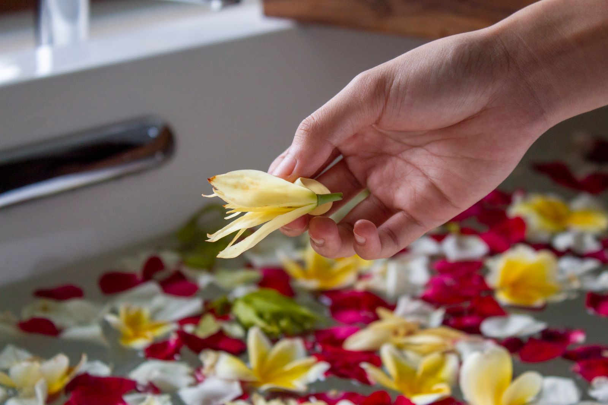
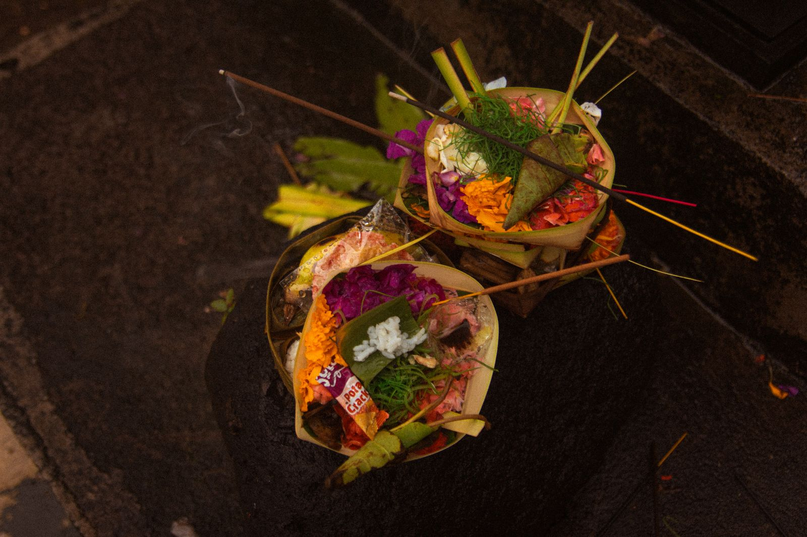

The Art of Sacred Bodywork — achtsame Berührung, tiefe Heilung und sinnliches Erwachen inmitten des Dschungels von Ubud.
The Art of Sacred Bodywork — mindful touch, deep healing and sensual awakening amid the jungle of Ubud.
Awakened Touch ist eine Praxis für sakrale Körperarbeit in Ubud, Bali. Hier begegnest du dir selbst — jenseits von Ziel und Leistung, in absichtsloser, achtsamer Berührung. Tantra versteht sich hier nicht als Technik, sondern als Haltung: Präsenz, Respekt und liebevolle Aufmerksamkeit für deinen Körper, deine Energie und deine Geschichte.
Awakened Touch is a practice for sacred bodywork in Ubud, Bali. Here you meet yourself — beyond goals or performance, through touch that is mindful and free of intention. Tantra, in this space, is not a technique but an attitude: presence, respect and loving attention to your body, your energy and your story.
Getragen von balinesischer Naturverbundenheit und einer fundierten Ausbildung in Bern, Schweiz, schaffe ich einen Raum, in dem Entspannung, Sinnlichkeit und Heilung sich frei entfalten dürfen.
Rooted in Balinese connection to nature and a thorough training in Bern, Switzerland, I create a space where relaxation, sensuality and healing are free to unfold.
Mehr über michMore About MeAcht Qualitäten, die jede Sitzung wie einen roten Faden begleiten.
Eight qualities that weave through every session like a common thread.
Volle Präsenz im gegenwärtigen Moment — für dich und mit dir.
Full presence in the here and now — for you and with you.
Ein Innehalten, das Raum schafft für das, was sein darf.
A pause that creates space for what wants to be.
Loslassen von Anspannung, Kontrolle und ständigem Tun.
Letting go of tension, control and constant doing.
Sanfte Wiederverbindung mit Körper, Gefühl und Selbst.
A gentle reconnection with body, feeling and self.
Behutsames Lösen von Blockaden, Scham und altem Schmerz.
Careful release of blockages, shame and old pain.
Berührung ohne Ziel — einfach da, um zu spüren, was ist.
Touch without a goal — simply present to feel what is.
Jede Sitzung als Teil eines grösseren, persönlichen Weges.
Every session as part of a larger, personal path.
Das Erwachen der Lebensenergie in ihrer natürlichen Fülle.
The awakening of life energy in its natural fullness.
„Tantra ist nicht das, was man tut. Es ist die Qualität, mit der man es tut.“
“Tantra is not what you do. It is the quality with which you do it.”Awakened Touch — Ubud, Bali Awakened Touch — Ubud, Bali
Vier Formen der sakralen Körperarbeit — individuell auf dich abgestimmt.
Four forms of sacred bodywork — individually tailored to you.
Achtsame Berührung des gesamten Körpers zur Aktivierung deiner Lebensenergie.
Mindful touch of the whole body to awaken your life energy.

Heilsame, wertfreie Berührung im geschützten Rahmen für die weibliche Energie.
Healing, judgment-free touch in a protected space for feminine energy.

Balinesisch inspirierte Rituale für Übergänge, Segnung und Intention.
Balinese-inspired rituals for transitions, blessing and intention.
Schreib mir eine Nachricht — gemeinsam finden wir die passende Sitzung für dich.
Send me a message — together we will find the right session for you.
Jetzt Kontakt aufnehmenGet in Touch